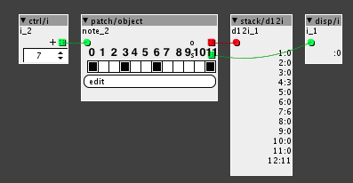

Hey guys!
Been bumpping my head all day, trying to find out how to do this function, so now I am going to ask here.
I have a "bin12" parameters, which is used to form a set of values, between 0 and 11 that I need to round an input to.
As it is now, it works like this:

Each step represents one of the values from 0-11, as seen on the picture. If a step is on that number of that step is output. So if step 3 is on and you select step 3, it will output 3. If step 6 is on and you select step 6, it will output 6. And so on, as seen on the picture. (The display object on the right also shows each value of each step, so you can see what is going on).
But if you for example select step 2, which is not on, it will output a 0. And if you select step 7, which is also not on, it also output a 0. As shown on the picture.
Summed up shortly, if a step is on, it will output the value of that step, if a step is not on, then it outputs 0.
This is where I got to now and now I am stuck, I don't know how to build the next step of the object, but I am assuming it might need to be done with a for loop that checks some values against each other. So here is what I want to add to this algorithm:
If I for example select step 2, which is NOT on, the the algorithm should select the first step below step 2 that is on and output that value. In this case step 2 is selected and the nearest step BELOW 2 that is on, is step 0, so it will output 0.
Another example:
In this care step 9 is selected from the input, but step 9 is not on, so the algo should scan the parameter and select the first value BELOW 9 that is on, which in this case is step 6. Then output will be 6.
So you probably get it by now:
If you select a step that is NOT on, the algo should output the value of first step below the selected step.
I probable need to scan/evaluate the parameter every time a new step is selected and I am thinking it can be done with a for loop, but not sure where to start at all.
Does anyone have an idea how to do this?
Here is the patch is anyone of the more code save guys are up for a challenge:
Scale Com 1 .axp (4.2 KB)
I am just learning about for loops and I looked at some exercises and a lot of stack overflow, but did not find anything I think could be used to do this and I am really not that comfy using for loops yet.
Any tips and help appreciated.